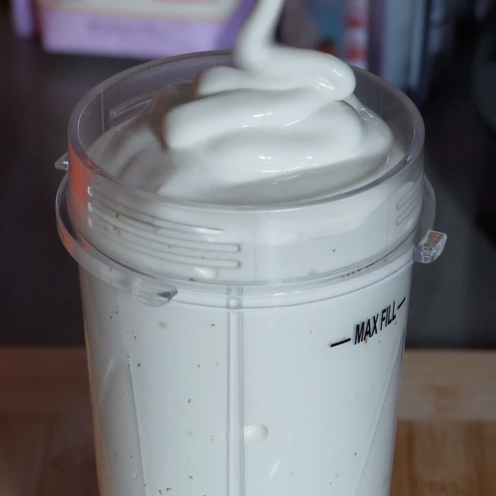

Malteada Vainilla
Ingredientes:
- 2 Scoops de proteína en polvo
- Leche de almendra
- 3/4 cditas de extracto de vainilla
- 1 cdita de goma xantana
Instrucciones:
- Verter leche en un molde de cubos de hielo y meter al congelador hasta que estén sólidos
- A la licuadora añadir más leche, vainilla, goma xantana, la proteína y los cubos de leche.
- Procesa a velocidad MEDIA durante 1 minuto para mezclar bien los ingredientes, raspando los lados de
la licuadora si es necesario.
- Añade cubos de hielo y 1 cucharada de crema batida espesa y procesa a velocidad ALTA durante un
minuto adicional.